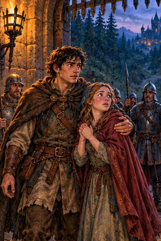
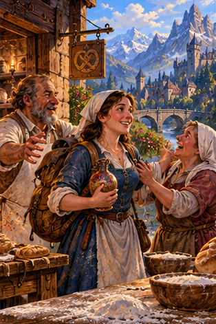
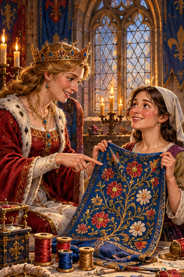
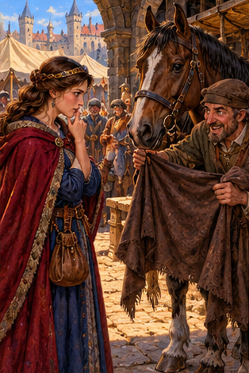
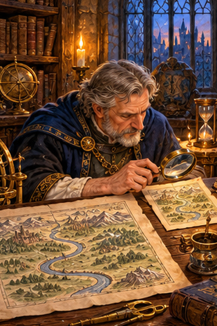
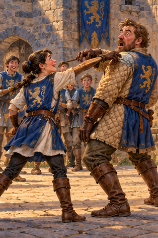
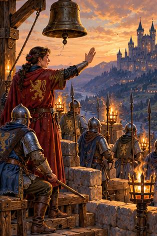

PDD Batch 10 — review only
Ten 314×471 portraits, in manifest order. Not installed.
Original composite
1. PDD 114 — Arco del Personaje
pdd114.jpg
2. PDD 115 — Viaje del Héroe
pdd115.jpg3. PDD 116 — Ser de mecha corta
pdd116.jpg
4. PDD 118 — Halagar
pdd118.jpg5. PDD 119 — Ancla
pdd119.jpg6. PDD 120 — Firmeza
pdd120.jpg
7. PDD 121 — gato encerrado
pdd121.jpg
8. PDD 122 — disminuir y ampliar
pdd122.jpg
9. PDD 123 — subestimar
pdd123.jpg
10. PDD 124 — obedecer
pdd124.jpg